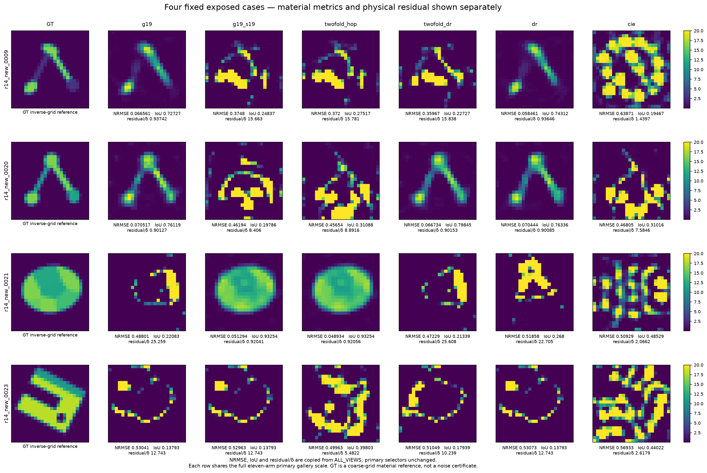
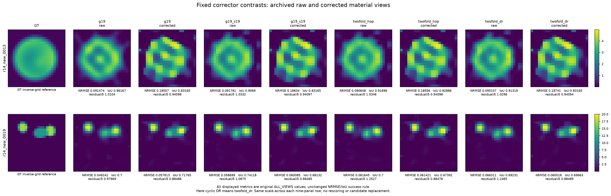

MAX-STRUCT R15：twofold G19 与周期反射的实际结果
最终判断：接收方向参与 G19 分母选取有可保留的恢复收益；本轮“共同强分母＋一次邻域＋周期 DR”没有取得额外净恢复。 它救回一个三叉连接对象，却破坏了一个原本恢复良好的连续介质对象。完整空间的周期反射损伤更大。独立运行的原 DR 流程仍然有价值，不能把本轮融合版本的负结果等同于 DR 无效。
本轮真正完成了264次主反演、56次同完整状态干预、16次固定材料块反事实和44次所选终点梯度验证。主反演和56次干预均无运行失败。全部新预测及16次公开状态反事实完成后才批准新 GT 评分。下面结果是R14 已公开24对象的后续配对实验，不是新盲确认，也不是三维验证。
1. 用户提出的 twofold 思路怎样落实
G 是内部传播，S 是接收；二者右奇异向量一般不相同。因此不能把两个独立排序的“第19维”直接配成同一个方向。本轮先按 S 的相对奇异值0.1分强/弱，再在各 S 空间内对 G*G 的压缩矩阵分强/弱，得到四个互正交的条件空间 U11/U10/U01/U00。第一位表示 S。它不是全局 G/S 强空间的四个精确交集。
实际只有两种公开算子几何：全孔径的复 current 四空间维数为 11/0/9/556，半孔径为 6/0/13/557。G 数值满秩576，强谱为19维；“补空间”在这里须区分数值核与相对弱谱。S强G弱空间本批为空，未为凑齐四类而更改阈值。因此 U11 恰好是 S 强空间；本批的共同强筛选没有额外删去任何 S 强方向。
分母采用 K=P11 G P11，A=I+βDm−DmK。邻域保留原互不重叠四cell块的非对角 N，令 R=N−P11NP11，实际变换为
这是恰好一次 R 插入，包含完整材料导数；不是把未截断分母再完全求逆。弱空间只从额外低秩反馈和反射路由中排除，没有删除原 Maxwell 观测、材料变量或邻域作用。全部方法仍有576个独立实材料未知量。
每16个完整 G19 步及阶段末执行一次反射：沿 U01 对缩放 current 与 field 两者的增量路由，保留法向记忆，计算共享材料影子，以原完整 forward 审计，再注入原 DPCS/Fourier 状态并重置 PR。另有 AP、全空间反射和仅重置 PR 控制。由于 Dm 与谱投影一般不交换，这个实现是明确的 DR-inspired hybrid，不能冒称在两个独立物理集合上的精确 DR。
2. 同对象、同成本主结果
每次120秒整进程 CPU 上限，proposal绝对截止72秒，剩余预算由同一个原物理 corrector 使用。所有 setup、SVD、背景投影、注入、失败操作与写出均收费；晚完成候选不进入预算内结果。12路 i9、单 BLAS 线程，同一对象的所有方法在同一核心顺序运行。
“过线”仅沿用既有事后 NRMSE≤.15 且 IoU≥.70，不是本轮新成功门，也不等同于整体结构是否可识别。primary 为付费合法候选中最小原 Phi；secondary 为预先存在的噪声球内最小 R，缺失时回退 primary。两种规则都不用 GT。
| 方法 | raw过线/24 | primary过线/24 | secondary含回退/24 | primary平均NRMSE | 共同LU/RHS池过线/24 |
|---|---|---|---|---|---|
| 成熟CIE | 8 | 9 | 10 | .24343 | 8 |
| Dual-CIE | 8 | 9 | 9 | .23797 | 9 |
| 原G19内部右19 | 5 | 11 | 10 | .19881 | 12 |
| G19改用S右19 | 10 | 12 | 14 | .16017 | 11 |
| 共同强U11分母 | 10 | 12 | 13 | .16024 | 11 |
| U11＋一次邻域 | 9 | 12 | 12 | .15805 | 11 |
| U11＋邻域＋路由DR | 7 | 12 | 12 | .16091 | 11 |
| U11＋邻域＋路由AP | 6 | 12 | 11 | .16443 | 10 |
| U11＋邻域＋全空间周期DR | 4 | 8 | 7 | .23563 | 9 |
| U11＋邻域＋仅重置PR | 9 | 12 | 13 | .15903 | 11 |
| 原独立全场DR流程 | 6 | 13 | 14 | .15141 | 12 |
这张表保留了正面结果：S19相对G19救回0003、0012、0021、0022，丢失0009、0019、0020，净增1；相对成熟CIE，邻域版本救回0006、0012、0015、0021，丢失0019，净增3。几例差异是明显的材料恢复，不只是小残差差别。与此同时，0019是两岛结构基本恢复的过线边缘样例，不应与0021的错误离散热点等量解释。
共同强分母、S19和一次邻域的成功集合基本相同，不能将这份收益归功于更复杂的 twofold 融合。共同物理预算下没有恢复数领先，说明优势也依赖怎样计量实际资源；完整连续误差和费用曲线均保留。同CPU前缀不是单调的GT误差曲线：G19在共同CPU120前缀为12，在最终primary为11，是付费min-Phi候选更替造成的材料指标变化，不是漏跑。
本批平均改善集中在少数困难对象。S19−G19平均NRMSE差为−.03864，但中位差为+.000184；24对象描述性bootstrap均值区间跨0。这里没有宣称总体统计显著，也没有要求所有对象全胜才承认机制收益。
全部24对象、全部11方法的图和逐对象表见完整数据页。
3. 两个真正相反的恢复分支
下列ID均为完整前缀 r14_new，不能与R13或R12同尾号材料混用。
| 对象/方法 | NRMSE | IoU | residual/delta | 解释 |
|---|---|---|---|---|
| r14_new_0020，U11＋邻域 | .45654 | .3109 | 8.892 | 三叉连接结构落入错误材料区域 |
| 同对象，路由DR融合 | .06673 | .7984 | .902 | 联合流程恢复，包含后续corrector作用 |
| 同对象，原G19 | .07052 | .7612 | .901 | 原G19本来就能恢复 |
| r14_new_0021，原G19 | .48801 | .2208 | 25.259 | 大部分cell压在上下box，明显错误 |
| 同对象，S19 | .05129 | .9325 | .920 | 连续介质主体和幅值恢复 |
| 同对象，U11＋邻域 | .04893 | .9325 | .921 | 同样恢复 |
| 同对象，路由DR融合 | .47229 | .2134 | 25.608 | 反射融合破坏这条恢复路径 |
因此融合版本不是“12个全都与简单版本相同”：它用0020换掉0021。全空间周期DR只救回0020，却额外丢掉0003、0012、0015、0021、0022。这是明确的损伤反例。
原独立DR为13，不能由此直接断言其反射搜索本身全面强于S19：它raw仅6，随后corrector增加8个过线、损伤1个。其首个完成corrector审计CPU中位为43.25秒，八个stateful臂约73秒；它以更便宜的proposal留出了更多物理校正时间。该效率是端到端优势的一部分，但与纯粹“搜索能力更强”是不同主张。
本轮没有从已经收敛的G19坏终点做新救援；主表从同一公开材料初值出发，同状态实验从中间checkpoint出发。不能把这张表改称“已证明逃离最终错误局部极小”。

4. 从公式与轨迹得到什么新认识
第一，current空间的路由不等于材料空间的隔离。 对任何独立变化的材料对角阵都可交换的固定正交投影只能是坐标选择；一般 S/G 谱投影不满足它。早期四个周期的实际数据与此一致：路由DR材料变化在实材料U01之外的能量份额中位为81.985%，AP为68.641%，全空间周期DR为80.253%。实材料空间与复current路由空间本身也不同，不能把这些比例叫作物理信息泄漏率。
第二，重新进入辅助表示会损失反射影子。 注入DPCS/Fourier后，shadow current的相对L2投影误差中位分别为DR23.896%、AP17.346%、全空间DR32.796%。这不是“信息损失百分比”，但明确量化了接口改写。独立DR没有每16步回到受限G19表示的这条接口，所以其正面结果与融合失败不矛盾。
第三，材料块更贴近负物理梯度并不预示最终恢复。 在完全相同的0021 checkpoint512上，G19单次读出使原Phi下降.01811，S19使之上升.003416，U11＋邻域使之上升.000616；但完整反演恰是S19/U11恢复而G19失败。这否定“局部物理下降越好，后续材料恢复必然越好”的解释，不证明所有上坡步都有益。
0020还有更强的有限步反例：G19材料步的梯度线性预测为Phi上升.03609，完整Maxwell实际却下降.05852。有限材料动作必须用原forward验算，不能只靠局部梯度或背景谱排序。
第四，错误活动面比单个理想谱半径更接近实际瓶颈。 0021的G19 primary有515个cell在下界、31个在上界，只余30个非活动变量；路由DR为518/29。S19则为96/0。错误结果的投影梯度约1e−7，说明有明显的边界面滞留，但未验证Hessian，不能宣称严格局部极小或测得吸引域体积。
56个同状态干预确实共用完整材料、current、Q、PR、阶段和记忆。36个±扰动在同β=.2阶段内，16步材料有限增益约3.7–50.5，普通邻域版本也有相近增益。它不是DR独有现象，不是理想闭环谱半径或Lyapunov指数。仅PR重置在第16步之后才影响下一次current更新，不能用该窗口中材料恰好一致来宣称PR无作用。
详见轨迹与反例。未发现可成立的奇异环、周期吸引子或chaos证据。
5. G19−GT误差究竟在哪
原48个公开G19/DR端点的独立离线分解覆盖全部24对象，不只挑成功图。G19材料误差在背景实S数值核中的pooled份额为55.45%，逐例中位98.22%；在条件双弱U00中的pooled份额44.72%，逐例中位98.93%。二者分母不同于NRMSE，pooled值受少数巨大错误支配。
0021是重要反例：G19误差的61.52%在共同强U11，7.15%在U01，31.33%在U00；0009和0020却约99.4%在U00。单一“误差大多在补空间”的说法会把不同失败混在一起。
真正材料导数是
不是背景Sh。背景S-null投影经场与resolvent传输后有明显接收作用；各贡献还大量抵消，孤立能量比例可远大于100%。不能把背景弱空间直接判成数据不可辨识，更不能据此硬删材料自由度。完整分母、交叉项与数组见旧端点分解。
6. corrector与选根是第三层问题
0013的G19 raw为NRMSE .0915、IoU .962，corrected为.1856、.832。主要外形依然恢复，但均匀性和幅值变差，不能简单称图像全失败。其D下降约3.08e−5，R反而增加6.16e−7，不能把损伤全部解释成强平滑prior。原最小R球内secondary保留了.0912/.965的材料。
0019的两岛主体在许多方法中都已出现：S19 corrected的NRMSE仅.0601，IoU .681；secondary为.0585/.741。几像素边缘及阈值造成过线变化，不是与0021相同的灾难性失败。原统计保留，图像结构解释另列。
对若干共同不过线对象，已选材料在噪声球内，而且原Phi低于GT参考。继续更精确地优化同一个Phi不能保证回到GT。原球内最小R规则能保住一些已有候选，但也会损伤另一些对象；所以完整primary/secondary表同时给出，没有按GT逐例挑规则。
19/20个matched粗GT参考在原CN99球内；0022约1.001delta，保留原噪声实现，不事后扩大门。四个cross-grid目标的粗参考与细采集不同，不拿noise-only球宣称物理证书。保存的两个球内候选只证明当前有限模型与容差下的候选歧义，不证明无噪声或连续Maxwell不唯一。

7. 费用、证据范围与论文判断
主264任务并行历时3,046.36秒，实际外部CPU共31,372.375秒，Maxwell LU203,157次、复数RHS3,717,630；fork56为102.375秒、172 LU/2,064 RHS。另有接线/旧端点/16读出/44终点验证149 LU/7,500 RHS。所有这些小模型的单个Maxwell分解维度是576；小Woodbury LU、背景Cholesky和三角RHS单独列，不能与Maxwell LU混计。
归档、失败重试、下载和绘图另付费。一次打包因未同步本地complex缓存而失败，531.625秒CPU已保留；修正只涉及IO与原缓存拷贝，没有重跑反演。完整原始数据为8.72GB，分16卷7.36GB无损归档。货币/模型账单未由工具提供，不填零。详见COST_LEDGER和失败记录。
本轮没有重训NN，没有新3D矢量或Fresnel反演，没有新的独立材料。SOM/twofold/DR本身均有先例，不能把组合命名当理论突破。当前可以形成一份有实质正反例的反馈与表示机制研究：接收方向能改善部分高contrast材料恢复，错误活动面、辅助表示注入和候选选择各有独立影响。本轮融合DR尚不宜取代更简单的S19/U11版本，也不能仅凭这些数据宣称新的强TAP算法已经成熟。
下一轮最值得研究的是源场与resolvent加权后的真实材料可观测方向，以及它怎样改变活动box面的可访问性；同时保护已经付费获得的好候选。先验证这些具体结构，优于继续增加Green阶数或反射周期参数。后续命题、完整状态入口及未回答问题见Pro交接。本轮不再自动开启新算法或扫参。